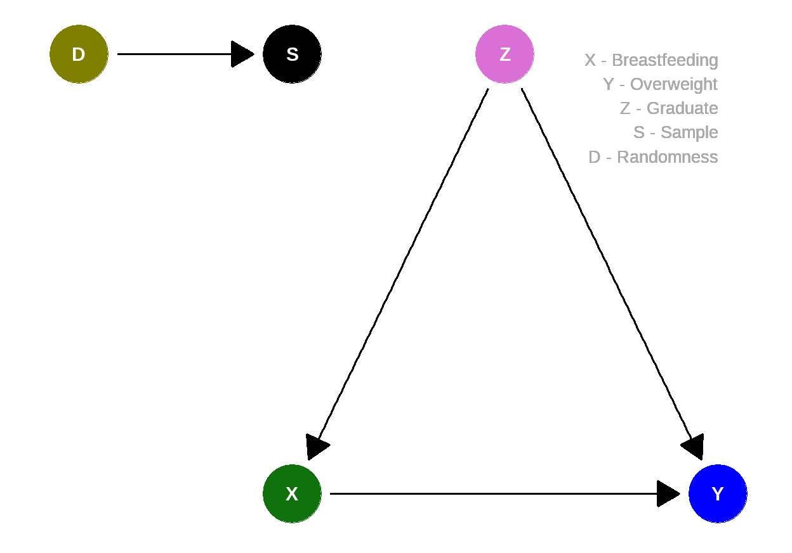
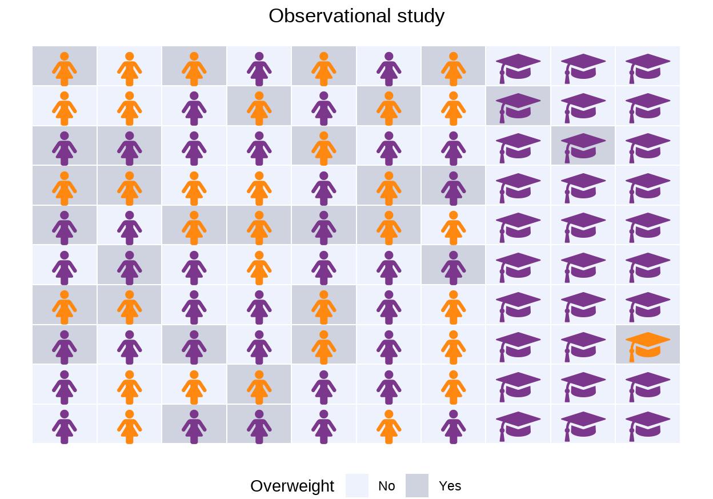
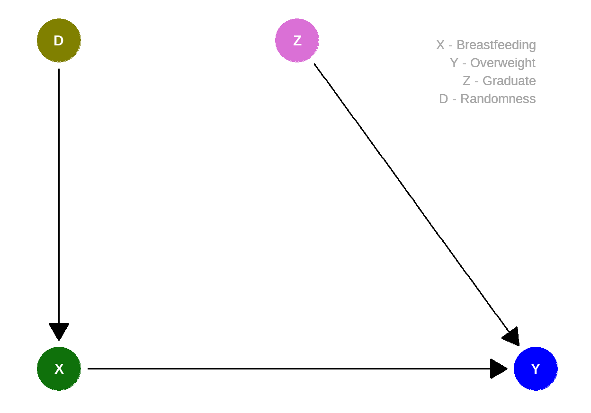
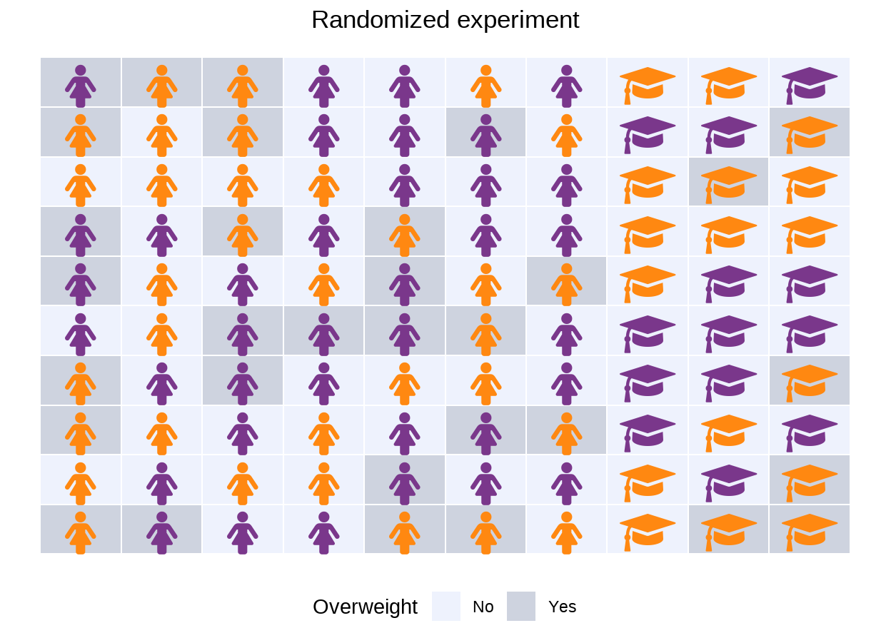

Learning objectives
In this module you will learn more about:
the different data requirements for description and prediction;
the advantages of randomly drawn samples;
the advantages of random assignment in the context of experiments.
Reducing overweight through breastfeeding?
A

As you can see: Children of women who
This is level of description (see Module 3).
To
reach the levels prediction and
causal inference we need more. A helpful trick
for this has been known by statisticians and scientists for a long
time.
Let us start with a highly simplified model in which we assume the following causal relationships:
Whether the child is
overweight at age 6 potentially depends on whether they werebreastfed exclusively for the first four months (Yes ,No ).But
overweight also depends on the level of education of the mother, here assessed with whether or not the mother is a collegegraduate .Breastfeeding (Yes ,No ) could also potentially depend on whether or not the mother is a collegegraduate ist.
This results in the following causal graph:
So far, so good. But when working with real data, we have to take something else into account: We do not, of course, have data for all women with children, but only for a sample.
Population and sample
Suppose that we are interested in a population where 30% of women are graduates. For example, a relevant population could be all mothers in a given country at a given time.
At least 4 months of full
In this target population, the probability of
Usually we do not know the values in the population, we only have a sample available for our analyses.
Suppose that for our data collection, there is a relationship
between the mother’s level of education (
Now let’s draw a sample, women who end up in our data are highlighted in color:

In this convenience sample, the probability of
We can use the sample result to describe it, but we cannot generalize or use the results to predict new data from the population of interest.
For example, if we wanted to use the data to predict whether a randomly selected woman was breastfeeding or not, our estimated probability of \(Pr(\color{green}{\text{breastfeeding}} = \color{purple}{\text{Yes}}) = 0.8\) would be too high.
So we need more than just the sample…
Random sampling
The problem is that our sample depends on a variable,
This problem affects many surveys – people with certain characteristics often prefer to participate, and these characteristics in turn are related to the object of study.
How can we make sure at this point that our sample doesn’t fool us?
This is where randomness helps!
Quelle: https://pixabay.com/de/photos/w%c3%bcrfel-rot-fallen-zufall-635353/
Random sampling removes the dependence of sample membership on the
variable

The sample then depends only on random chance, resulting, for example, in the following:

In this random sample, the probability of
All remaining deviations are just random – sometimes we will overestimate the true value, sometimes we will underestimate it. And the larger the sample, the smaller the deviations we see when we sample repeatedly.
Thanks to random sample, we can thus make reliable predictions about whether a randomly selected woman is breastfeeding or not.
But what about the analysis goal of causal inference?
Random assignment
Our fictitious study is reported in the media. A possible headline reads:
Benefits of breastfeeding proven: 80 % of children who were exclusively breastfed for 4 months are not overweight at age 6.
Knowing how many
In the fictitious study, as reported in the headline, the probability
of overweight is \(\color{purple}{0.8}\) for
Data were collected as part of an observational
study, that is, mothers were simply asked about
A comparison of the proportion
\[\color{purple}{0.8}-\color{orange}{0.44}=0.36.\]
The assumed model looked like this:

This leads to the following distribution in the population:

Overweight occurs less often if
But: Graduates
Randomized experiment
Assuming the causal model with only one confounder (here: graduate), we could simply adjust for this variable, as we have already learned. But what if we did not collect the variable in our data? And, more importantly, of course there could be numerous other confounders here!
A classical approach to determine average causal effects are randomized controlled trials (RCT). Arrows pointing into the variable \(\color{green}{X}\) are eliminated and the assignment \(do(\color{green}{X}=\color{green}{x})\) is randomized.
Note: Would a randomized experiment even be ethical and feasible for this question? Can we randomize which mothers breastfeed and which don’t? In the interview with economist Anne Brenøe, you can learn more about designs that can be used to study the causal effects of breastfeeding in practice.

A possible outcome looks like this:

A comparison of the probabilities for
\[\color{purple}{0.76}-\color{orange}{0.6}=0.16.\]
In the
In our
To move from pure prediction (“How likely is it that a randomly selected woman breastfeeds?”) to causal inference (“What effect does breastfeeding have on the risk of overweight?”) requires more than just the data. We need additional knowledge about how the data came to be – what additional variables influenced the variables of interest, or whether, for example, there was a random intervention.
Note: For reasons of statistical precision, it is
appropriate to include the variable
In his talk, Causal Thinking for Descriptive Research, Richard McElreath points out that we should use honest methods for modest questions:
What are we trying to describe?
What is the ideal data for doing so?
What data do we actually have?
What causes differences between (2) and (3)?
In this module, you have learned statistical methods for optimally designing data collection, if possible, so that no differences are found in (4). Ideally, we have a random sample; ideally, there is random assignment to experimental groups.
Unfortunately, it doesn’t always work like this in practice, and in some situations it is simply not possible.
Note
This course was supported by a grant from the German Federal Ministry of Education and Research, grant number 16DHBQP040.